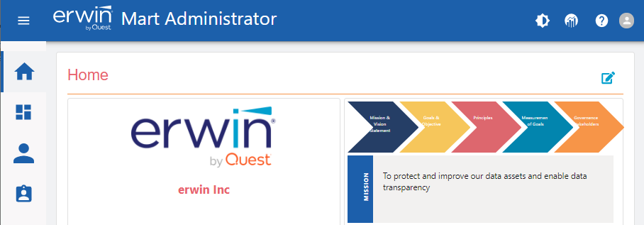
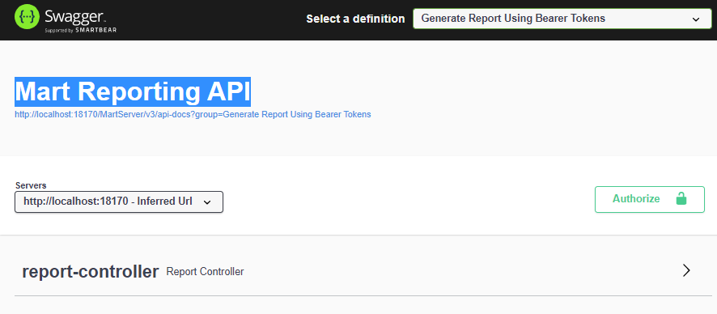
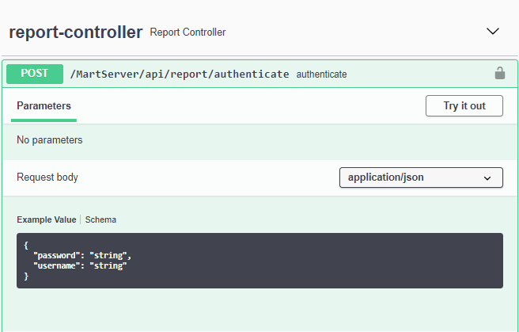
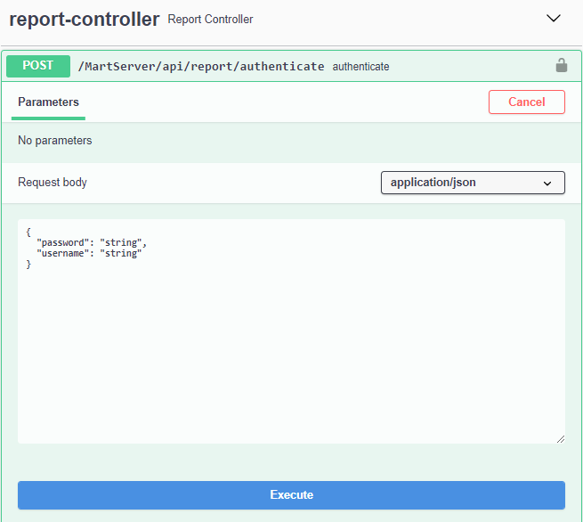
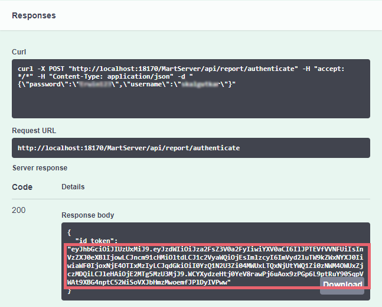

REST reports generation from Mart requires a bearer token in order to authenticate yourself. Once generated, you can reuse this token to generate multiple reports.
To generate a bearer token, follow these steps:
Log on to erwin Mart Administrator.

On the top pane, click .
The Mart Reporting API page opens.

In the Select a definition field, select Generate Report Using Bearer Tokens.
Expand the report-controller section. Then, click the POST section.

Click Try it out.

In the Request body section, enter your Mart username and password.
Click Execute.
The CURL command and bearer token are generated in the Responses section.

Copy the bearer token (highlighted in the image above, content between the quotes) and use it in your CURL command for report generation.